Riviera Maya Explained: Cancun, Playa & Tulum
Understand how Cancun, Playa del Carmen, Tulum and the resort zones differ — the map to read before you shortlist any hotel.
A mindful choice of destinations, hotels and holiday format — without mistakes or overpaying.
Choose a country →Three principles that help you choose your holiday consciously.
We look for recurring complaints and patterns in reviews, rather than relying solely on the overall rating.
We assess terrain, distance to the beach and the actual position of the hotel using maps and guest photos.
We check taxes, resort fees and cancellation terms so you can see the true price of your holiday.
Explore Mexico, the Dominican Republic, and the Caribbean with expert travel guides.
Mexico resort & hotel guides
Cancun, Playa del Carmen & Tulum
Real travel planning without booking mistakes
Punta Cana & beyond
Resorts • Beaches • Trip planning
Hotels, flights & vacation planning
Explore Caribbean islands
Routes • Cruises • Beach destinations
Find the best island for your trip
New to the Riviera Maya? Read the hub first — it organizes every guide by the decision you're making. Then pick a starting point below.
Open the Riviera Maya Travel Hub →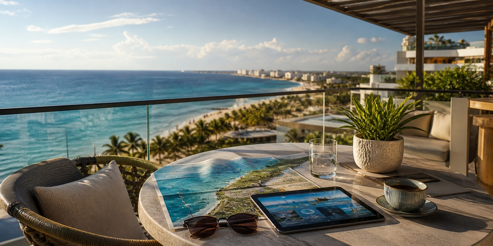
Understand how Cancun, Playa del Carmen, Tulum and the resort zones differ — the map to read before you shortlist any hotel.
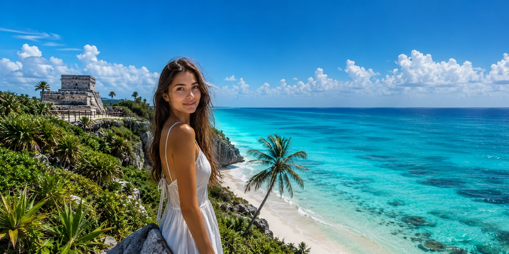
An honest, decision-first read on where to take your first Caribbean beach trip — and who Cancun, the Riviera Maya, Tulum and Punta Cana each actually suit.
Before you reserve: area, beach type, reviews, the real final price, room type, resort style, and the cancellation red flags.
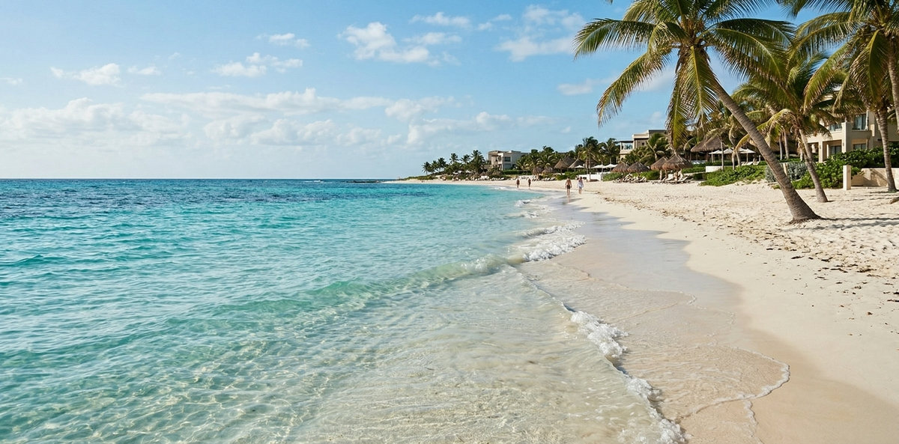
Dry season, prices, crowds and sargassum month by month — the best time to go for first-timers, families and budget trips.
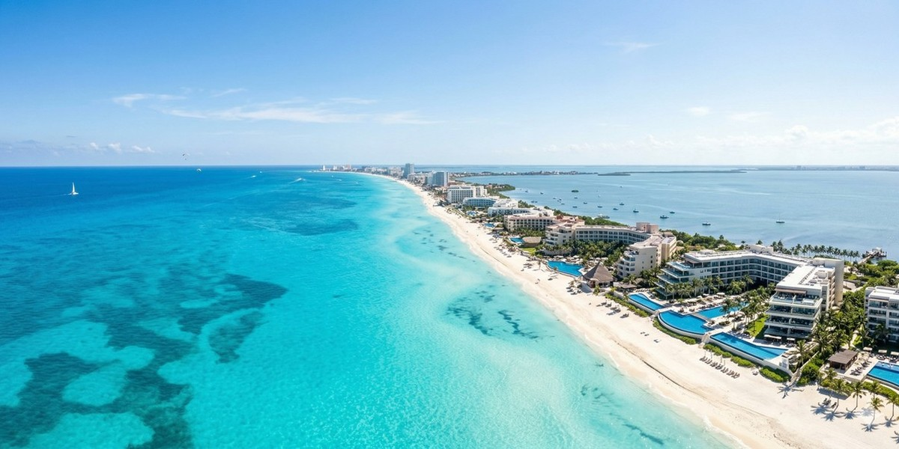
A realistic 2026 budget across three travel styles, from roughly $2,100 to $3,800 — flights, hotels, food and the hidden costs.
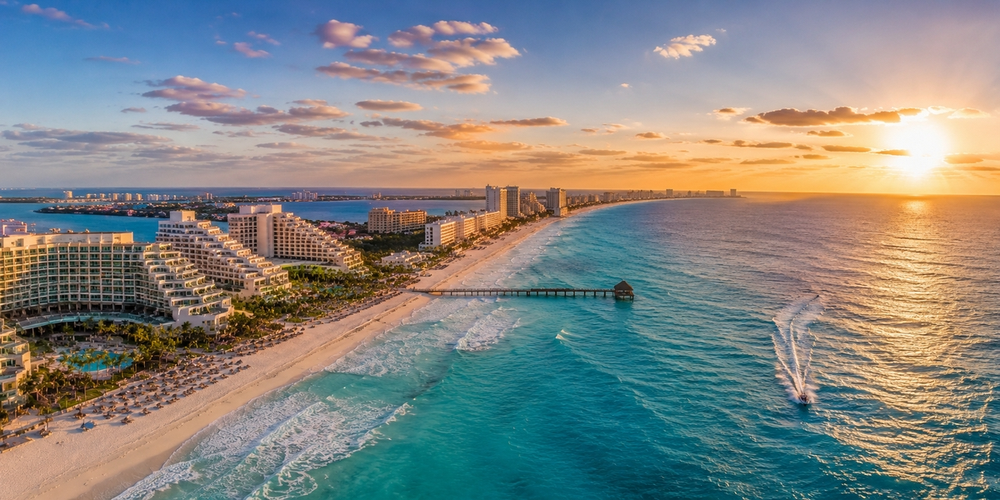
What the advisories actually say, which everyday risks matter most, and how to avoid the few things that go wrong for tourists.
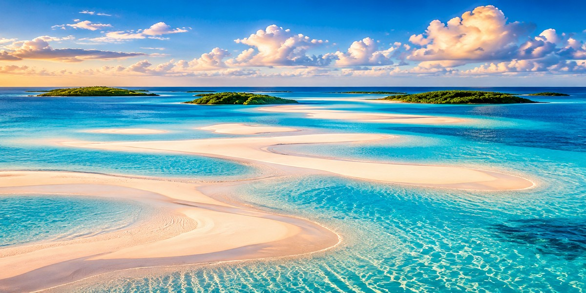
How to choose between Nassau's Cable Beach, Paradise Island mega-resorts, and the Out Islands (Exuma, Harbour Island, Eleuthera), with entry rules, real EP + tax math, and cruise-crowd timing.
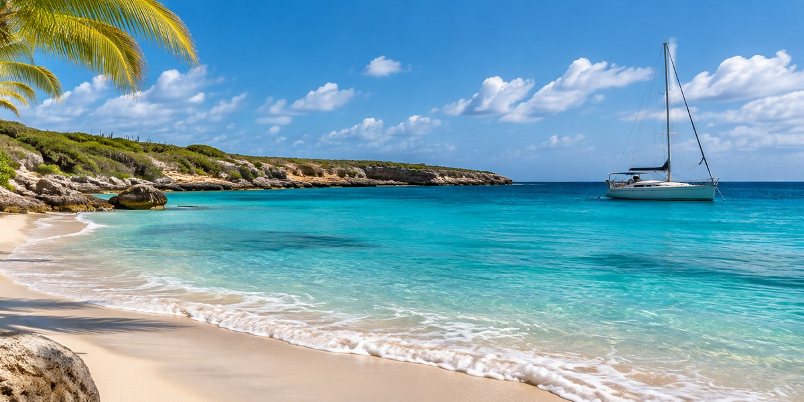
How to choose between Aruba, Curaçao, and Bonaire: dry desert weather outside the hurricane belt, sand vs coves vs shore diving, entry taxes and 2026 budgets.
Which Caribbean island chains connect cleanly by ferry, why cross-basin flights detour through Miami, real port fees, and when a cruise beats DIY hopping.
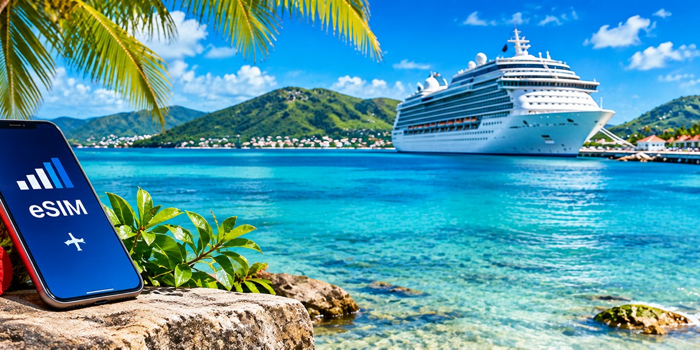
Compare Saily, Airalo, GigSky, Saily Cruise, Yesim, and Holafly for Caribbean cruises and island hopping against U.S./Canadian roaming and ship Wi-Fi.
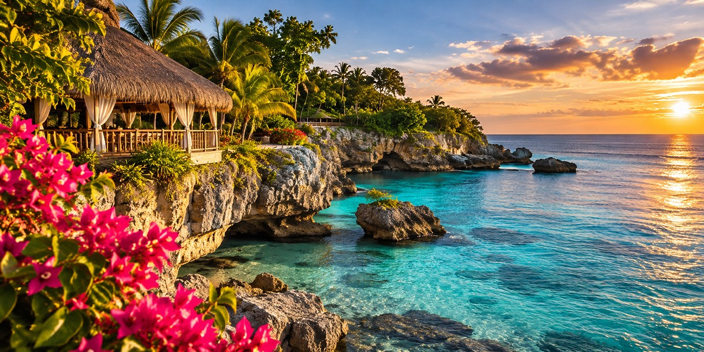
Compare Montego Bay, Negril, Ocho Rios, Port Antonio, and the South Coast — plus off-resort safety rules, waterfalls, jerk pits, and all-in 2026 budgets.
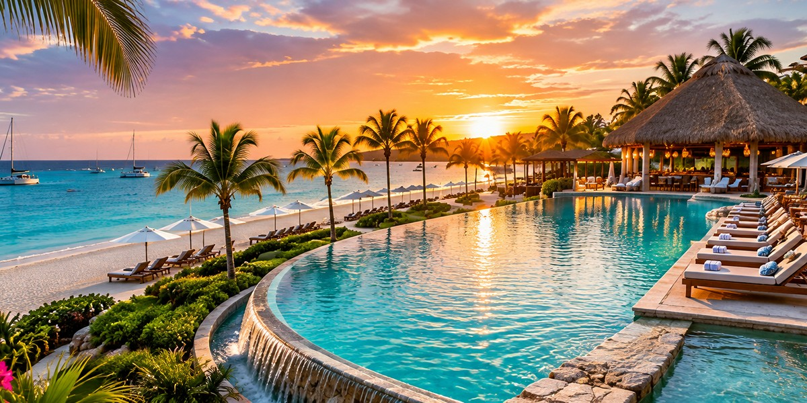
Compare Caribbean hotels by real seven-night cost: AI vs EP fit by island, 20-32% tax and resort fee stacks, airport drive times, and hurricane cancellation terms.
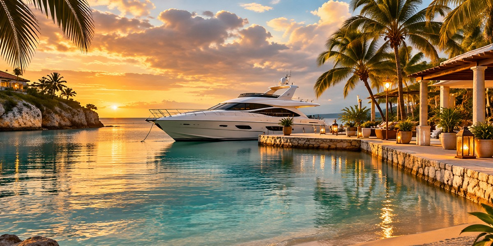
How the Dominican south coast compares to Punta Cana: Bayahibe Village vs Dominicus vs Casa de Campo, Saona Island access, wreck diving and real 2026 budgets.
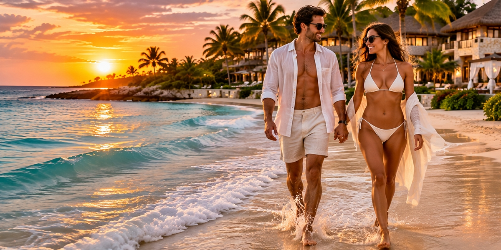
How to book a genuinely quiet couples trip in Punta Cana: Secrets and Sanctuary Cap Cana vs Zoëtry Agua and Excellence El Carmen, plus private beach dinners and marina charters.
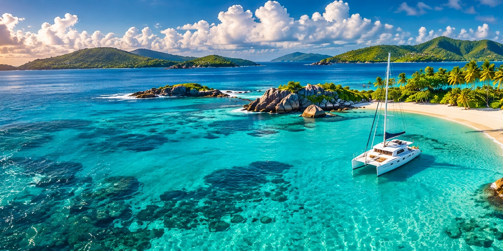
Dominican Republic, Jamaica, Bahamas, Aruba & Curaçao, Saint Lucia, Turks & Caicos, and Puerto Rico compared by real daily costs, beach quality, hurricane risk, and flights.
Travel Radar LK is an independent project for travelers who want to plan trips more consciously. The current main focus is Mexico, the Dominican Republic, and the Caribbean. The site publishes practical articles, location comparisons, and honest travel breakdowns without unnecessary noise.
If the site uses affiliate links anywhere, this is stated openly. Read more about the project →